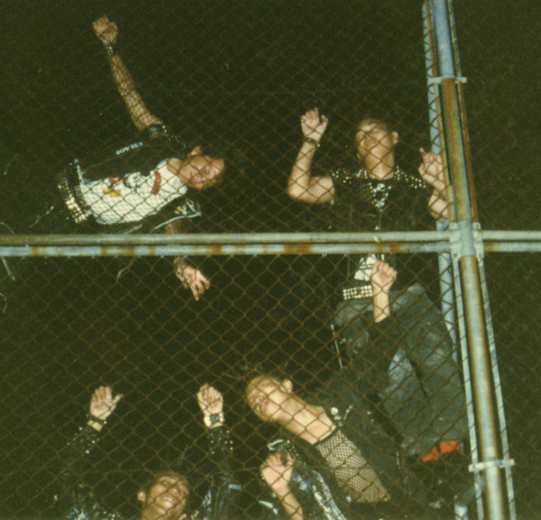
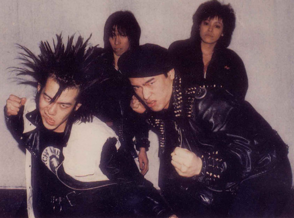
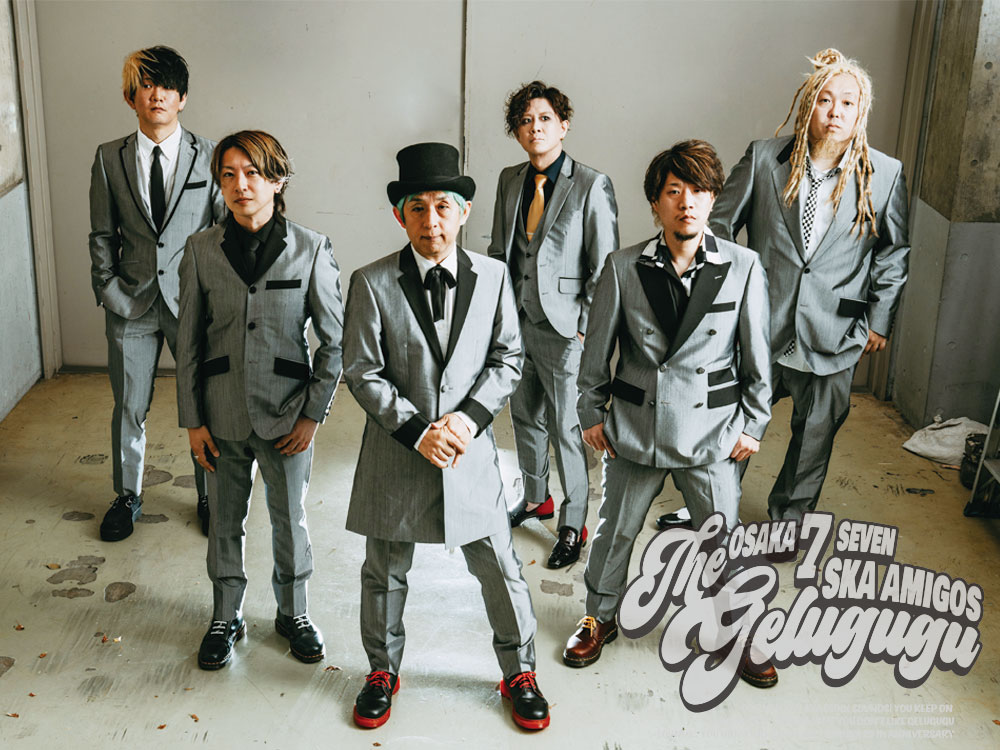
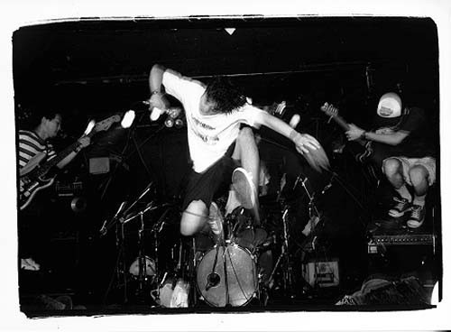

El Punk En Japon
Japón tiene una curiosa escena del punk, con años de historia, desde el Hardcore hasta el Ska Punk, el punk en Japon no llegaria hasta los 80 con bandas como The Swankys, GISM, The Stalin o Gauze
Bandas de Hardcore Punk

The Swankys

The Stalin

GISM
Gauze
Bandas de Ska Punk Japon

Gelugugu
Snail Ramp
